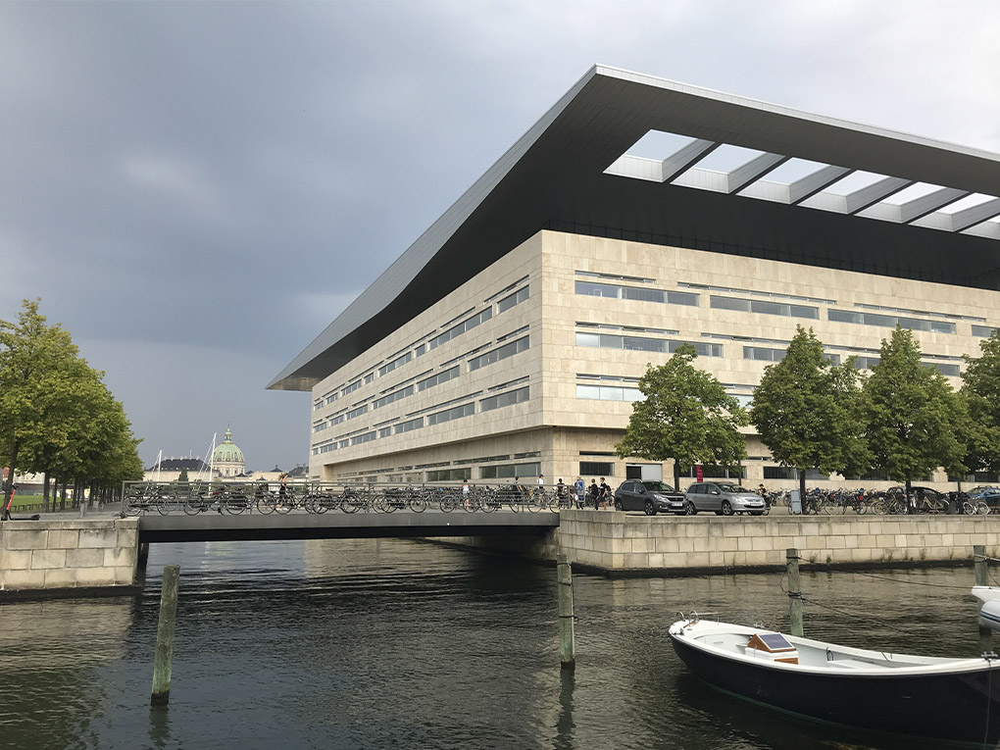
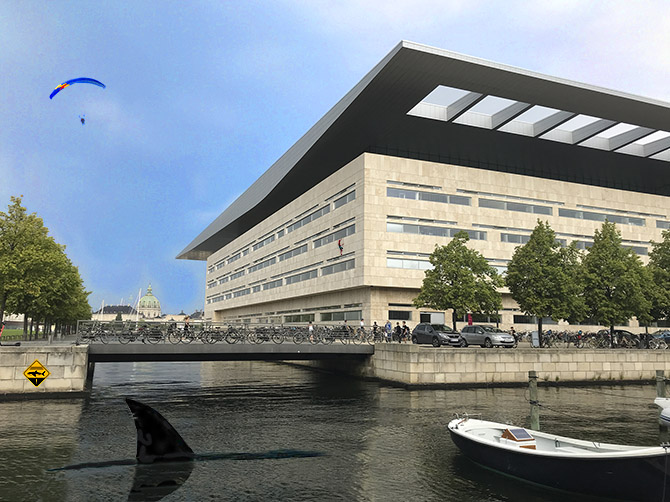

FLOW 1 Projekt - Adobe Photoshop CC
Opgaveformulering:
- Fjern et eller flere elementer på billedet.
- Tilføj et eller flere elementer til billedet.
- Ret billedets lysforhold eller tilfør billedet en stemning ved filter eller farvetoning.
- Beskæring og evt. opretning af billede.
- Billedet skal være i format 4:3 og gemmes så størrelsen er ≦ 1 M pixel.
Jeg har fjernet nogle pæle i vandet og derefter arbejdet med 'content awareness' redskaberne, så det ikke ses på vandet. Herefter har jeg valgt en lidt humoristisk tilgang og tilføjet en haj, et advarselsskilt, en paraglider og en Spiderman. Jeg har også ændret på farvetoningen i billedet, så det ikke længere er så gråt i vejret. Tilsidst har jeg sørget for at billedets format passer til kravene i opgaven.


Tilbage til Portfolio